Open questions
Every question waiting on your answer, with its pictures. Answered questions come off this list. Reply in chat with the number, e.g. "Q12: shared".
2 open · updated 2026-11-06
Q91
Town square redraw
A with a bigger statue pass (recommended) / A as is / B / Keep today's
- Tiles: today 99, A 40, B 34. DMG and Color.
- Most crowded view, with the land set: 175 now, 163 with A, 160 with B (of 176).
- A's statue is thin and its water reads like a pipe. The pass would spend 4 to 8 tiles on a fuller tap statue and a real water arc.
Today | A | B, DMG
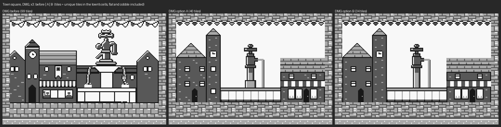
Today | A | B, Color
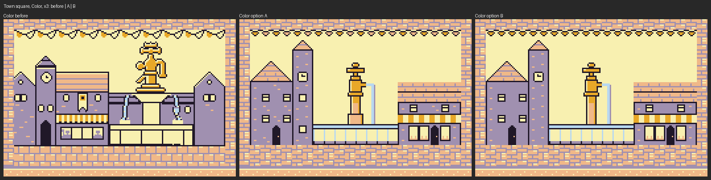
Q92
Merged land tiles
Take the merged land set? Yes (recommended) / No
- Land tiles 84 to 56; the whole map 658 to 621. DMG and Color.
- Trees and props sit on plain ground and line up with tiles; one pine dropped; pieces move up to 7 px.
- Grass, farm, moss and jungle share one tuft; desert and snow share one ripple. Color recolours them; the farm loses its plus tufts.
- The igloo spruces stay: sharing the lodge pine saves only 1 tile.
Before | after, DMG
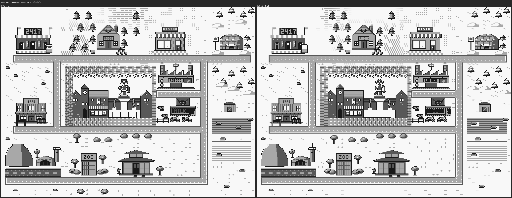
Before | after, Color
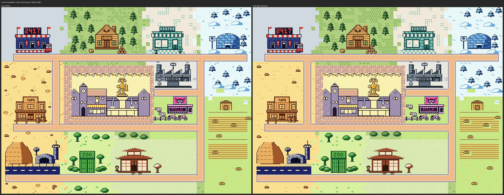
View
UFO beam-up on the map, walking bob, see-through flask
Beam-up, Color
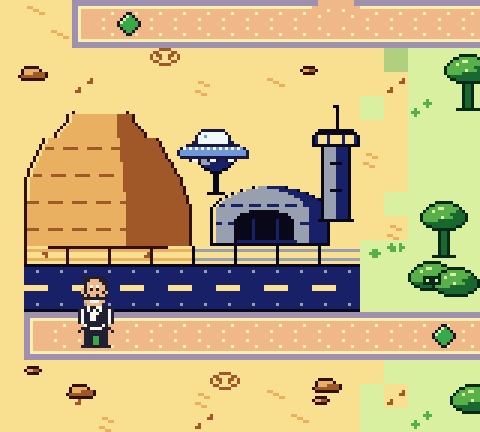
Beam-up, DMG
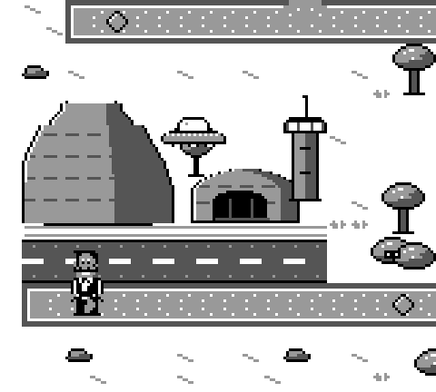
Walking bob, Color
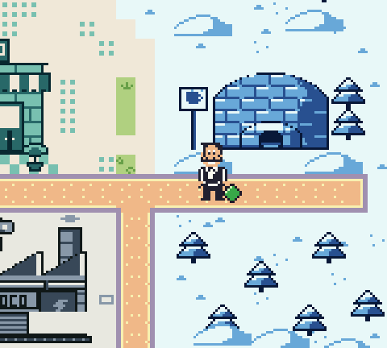
Walking bob, DMG
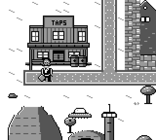
Empty flask: before | now, Color over DMG
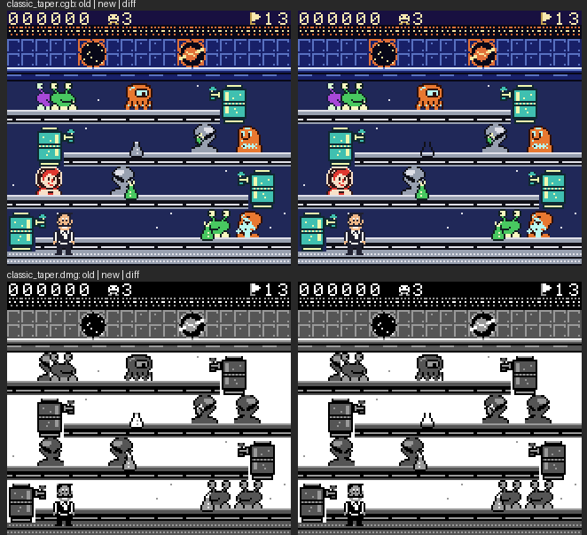
View
Scrolling credits, redesigned
One venue, Color
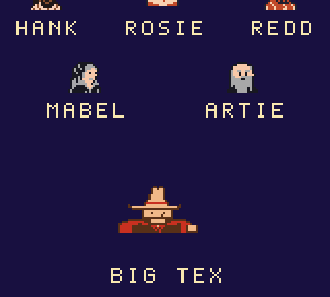
One venue, DMG
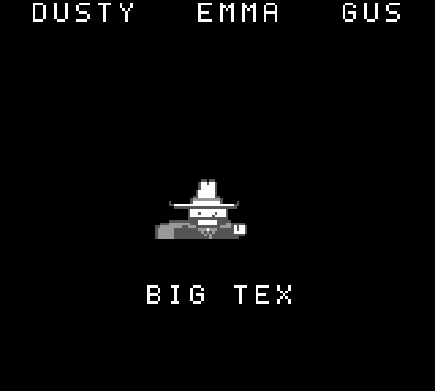
The stops, Color over DMG
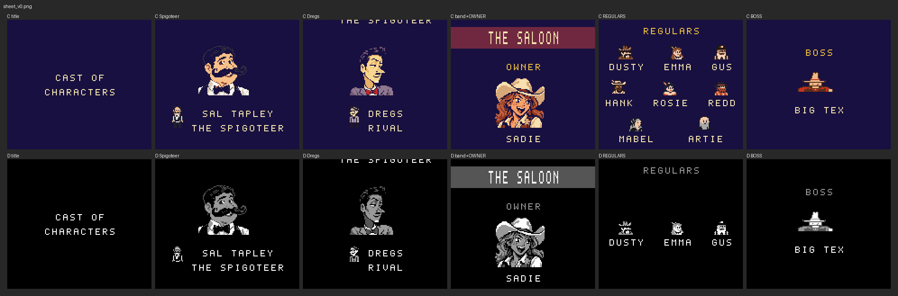
The end, no flash, DMG | Color
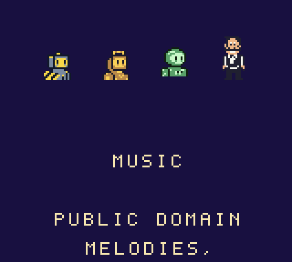
View
Map fixes: clean venue entry, story starts in town
Into a venue, Color
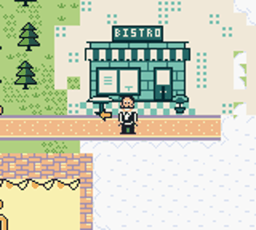
Into a venue, DMG
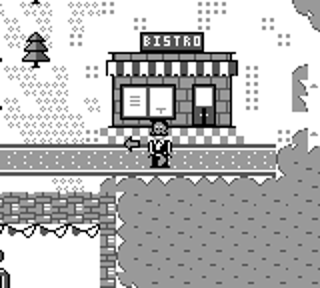
New story start, Color | DMG
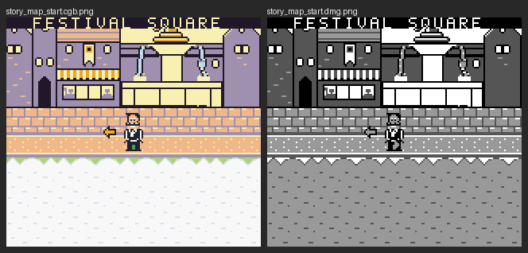
View
New credits patron cards, in the game
Saloon card, Color
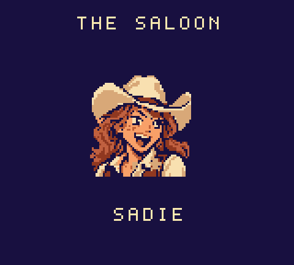
Saloon card, DMG
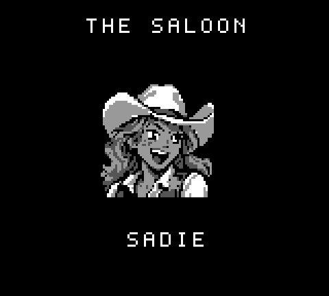
All ten venues, Color over DMG
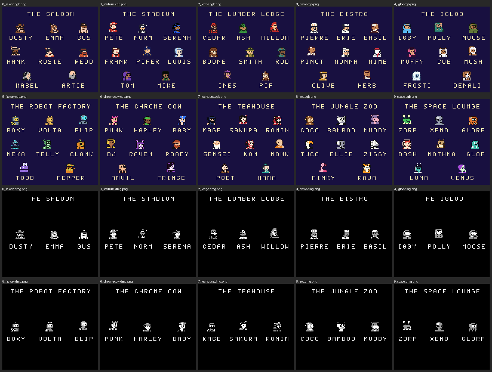
View
Scrolling story map, in the game
Town to Saloon, Color
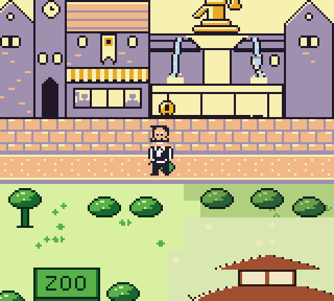
Town to Saloon, DMG
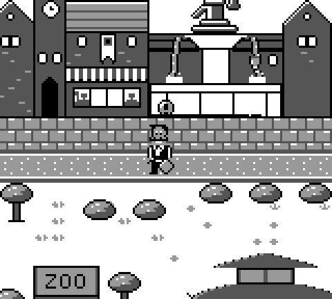
Town to Igloo, Color, fast
Start | mid game | all open
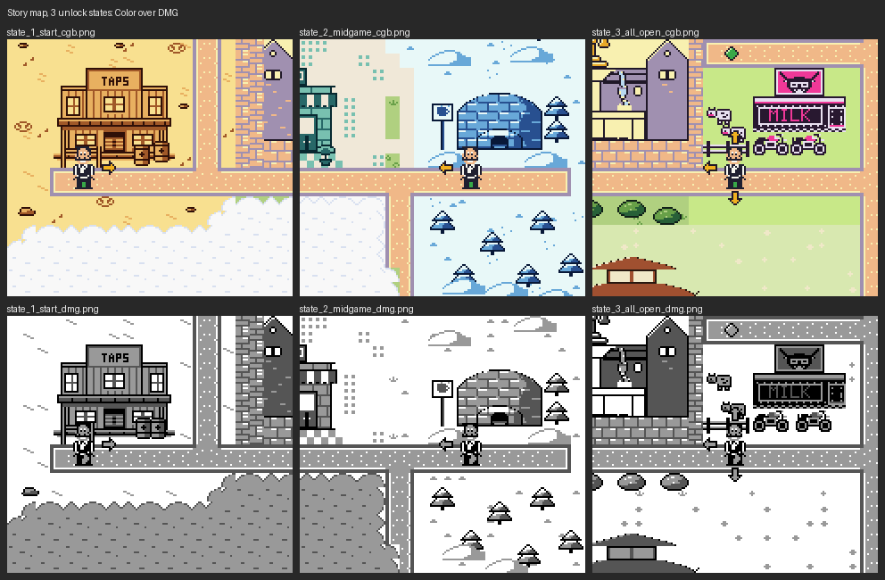
View
Map on DMG: full | hand-trimmed
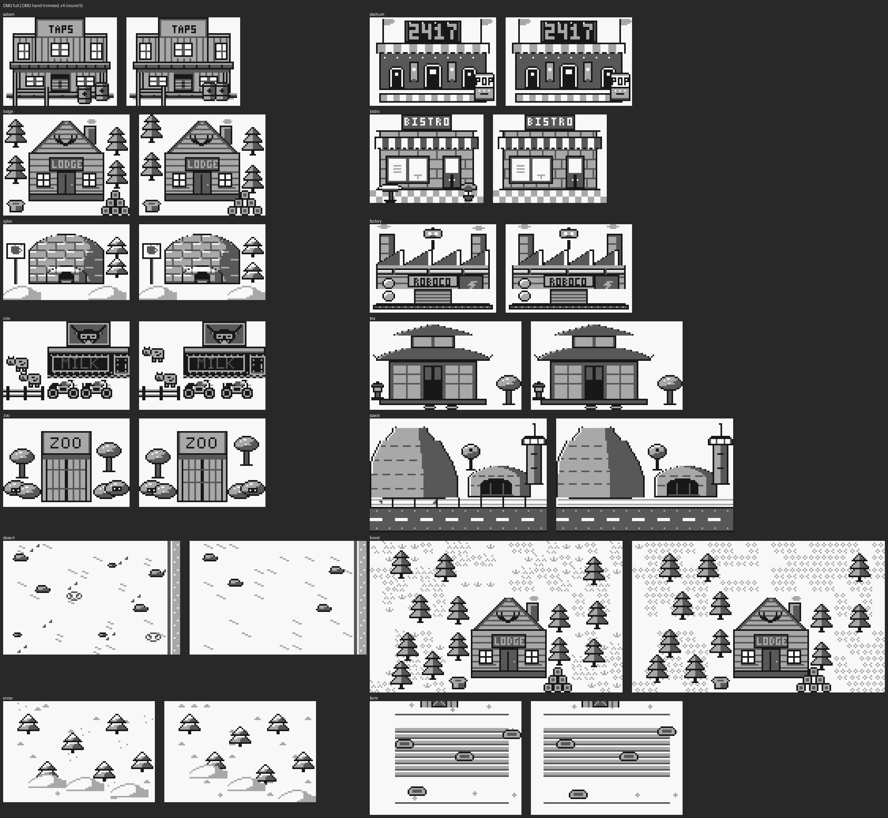
View
Fountain splashes
Ending, Color
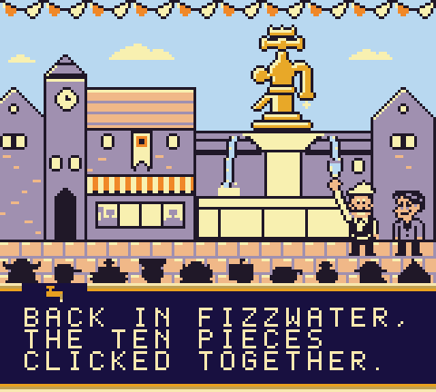
Ending, DMG
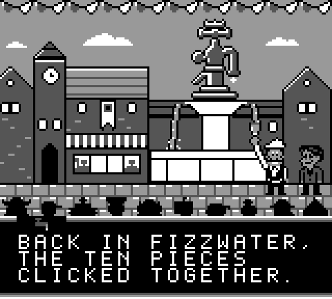
Credits, Color
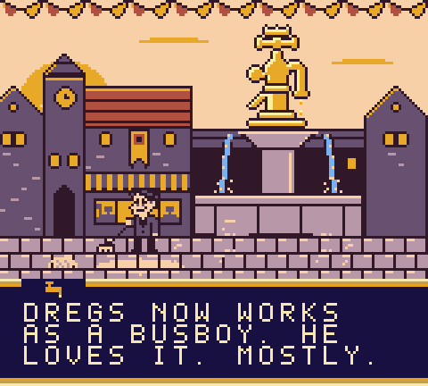
View
New town, in the game
Ending, Color
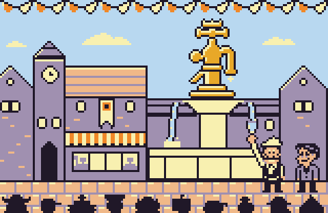
Ending, DMG

Credits, Color
Opening, Color

View
Lodge log roll, in the game

View
Stage lights, now fading
Lodge

Igloo
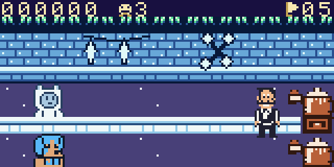
View
Before and now
Saloon dancer

Cheerleader